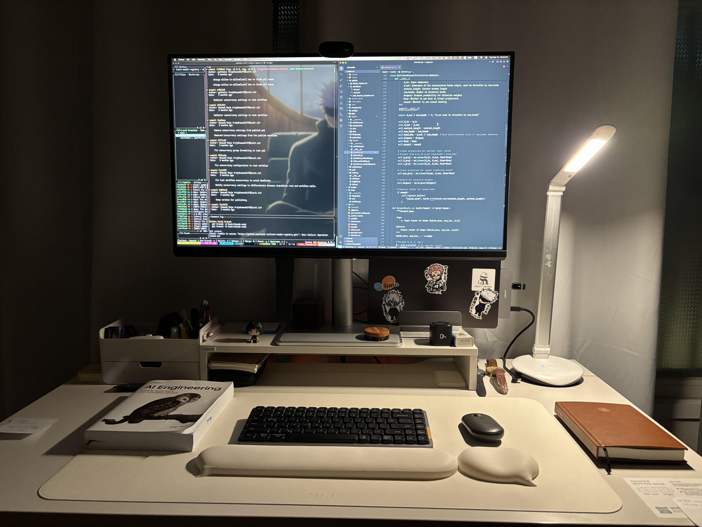

    <!-- Main Content -->
    <main class="max-w-4xl mx-auto px-6 py-12">
        <h1 class="text-3xl font-bold mb-8">Uses</h1>

        

        <ul class="space-y-3 text-theme-secondary list-disc list-inside">
            <li>MacBook Pro M3 and BenQ monitor</li>
            <li>I prefer low-profile keyboards — currently using <span class="text-theme-text font-medium">Lofree
                    Flow</span> and <span class="text-theme-text font-medium">Lofree Flow Lite</span></li>
            <li>IDE: <span class="text-theme-text font-medium">Cursor AI</span> with Claude Code</li>
            <li>Desk: <a href="https://www.desker.co.kr/" target="_blank"
                    class="text-theme-accent hover:underline">Desker</a></li>
            <li>Dotfiles &amp; configs: <a href="https://github.com/pytholic/what_you_seek" target="_blank"
                    class="text-theme-accent hover:underline">repository</a></li>
        </ul>
    </main>
